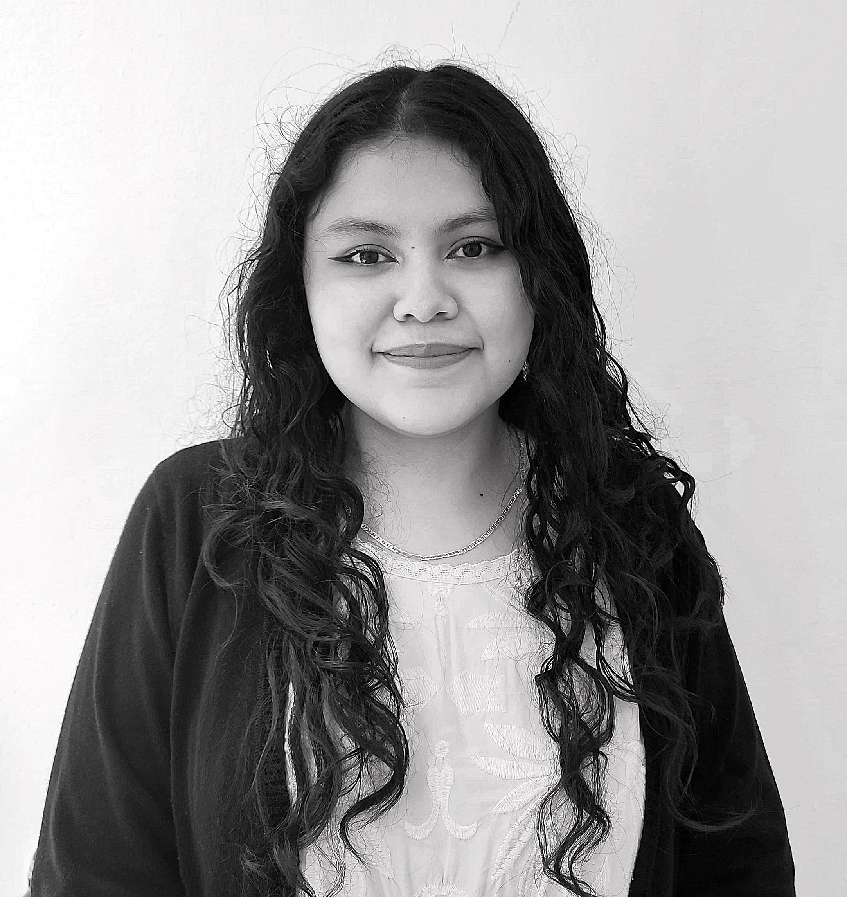
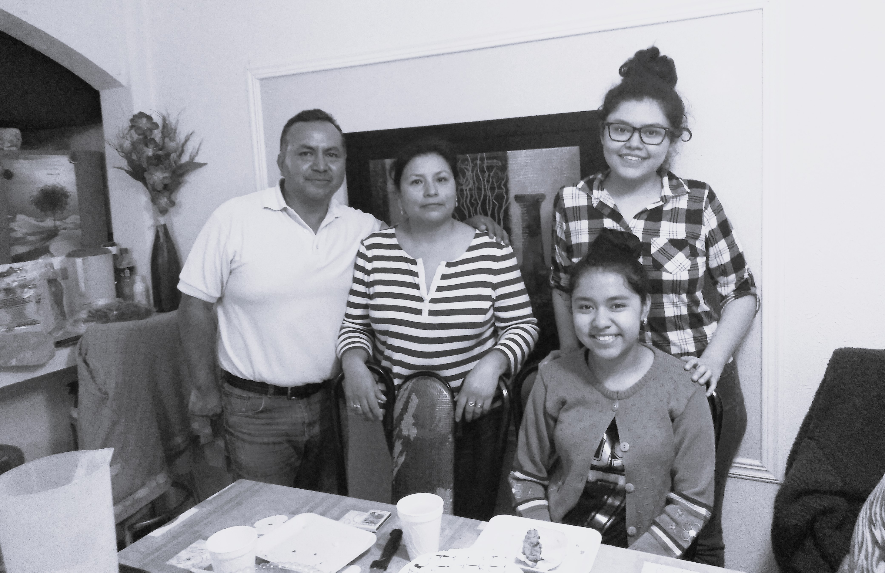

¿Quién soy yo?
Me llamo Melissa Loaiza Torres y tengo 22 años. Soy una chica joven, hija, estudiante de diseño gráfico. Me considero una persona seria y centrada, dedicada a mi carrera. También soy sumamente hogareña, y disfruto de pertenecer y pasar tiempo de calidad en casa en mi familia.
Mi familia
Mi papá se llama Víctor Loaiza, y tiene 54 años. Mi mamá se llama Lupita Torres, y tiene 51 años. Además, tengo una hermana menor que se llama Danna Victoria, y tiene 15 años. También tengo como mascotas una perrita llamada Greta y un gato llamado Ceviche.
Mis hobbies
Leer
Desde que soy adolescente me gusta leer novelas, fanfics y webtoons, sobre todo de romance, misterio o thriller.
Escribir
Disfruto mucho de escribir narrativa, minificciones y fanfiction de las cosas que me gustan. Siempre estoy ideando nuevas ideas e historias para escribir.
Ver series
Me fascinan las series asiáticas, sobre todo las coreanas. Me parece divertido verlas y comentar de ellas en comunidades de Internet. Mis géneros favoritos son los de romance, comedia, misterio y crimen. Y como gusto culposo, las tramas de venganza.
Mis series favoritas del momento:


Conoce más de mis series favoritas aquí